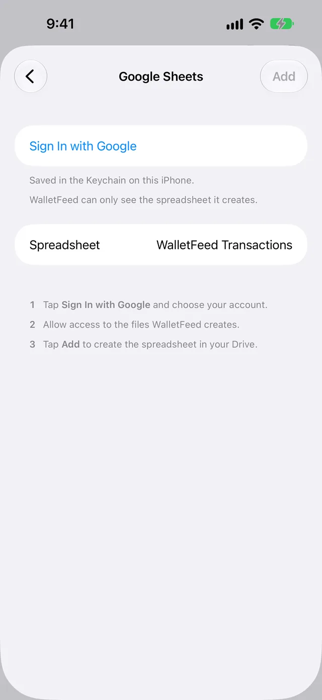

Send Apple Card transactions to Google Sheets
WalletFeed sends your Apple Card, Apple Cash and Savings transactions from your iPhone to Google Sheets. After you connect your Google Account, WalletFeed makes a spreadsheet in your Google Drive and updates it when your transactions change.
Before you start
You must have these items:
- An iPhone with iOS 26 or a newer version (WalletFeed is available only in the US)
- WalletFeed on your iPhone, with access to your Apple Card, Apple Cash or Savings account
- WalletFeed Pro (a subscription with a 1-week free trial, or a one-time Lifetime purchase)
- A Google Account.
Your sign-in stays on your iPhone
- WalletFeed keeps your Google sign-in in the Keychain on your iPhone. iOS encrypts the Keychain.
- Your Google sign-in does not go to iCloud Keychain or to your other devices.
- WalletFeed has no account and no servers. No person at WalletFeed can see or get your Google sign-in.
- Your iPhone sends your Google sign-in only to Google, in each request to Google.
- When you delete the destination, WalletFeed deletes your Google sign-in from your iPhone. You can also remove WalletFeed from your Google Account.
Step 1: Add Google Sheets in WalletFeed
-
On your iPhone, open WalletFeed.
-
Tap Destinations at the bottom of the screen.
-
Tap + at the top of the screen.

-
In Sheets & Databases, tap Google Sheets.

-
If WalletFeed shows WalletFeed Pro, get WalletFeed Pro.
Result: WalletFeed shows the Google Sheets screen.
Step 2: Connect your Google Account
-
Tap Sign In with Google.

-
On the Google page, get access to your Google Account.
-
Give WalletFeed access to the files that it makes.
Result: WalletFeed shows Signed In.
Step 3: Make the spreadsheet
-
To give the spreadsheet a different name, type the name in the Spreadsheet field.
The name is WalletFeed Transactions until you change it.
-
Tap Add at the top of the screen.
Result: WalletFeed makes the spreadsheet in your Google Drive. Then WalletFeed shows the message Send Transactions to Google Sheets?
The message shows the data that Google Sheets will receive, the Wallet accounts and the start date.
-
Tap Send.
Result: WalletFeed starts to send your transactions to the spreadsheet.
If you tap Cancel in the message, WalletFeed sends no transactions and removes the destination. The spreadsheet stays in your Google Drive. It has only the header row.
Step 4: Open the spreadsheet
- In Destinations, tap the name of your spreadsheet, for example WalletFeed Transactions.
- Tap Open in Google Sheets.
The spreadsheet has one tab, Transactions. Row 1 has the headers. Each row below row 1 has one transaction.
On a computer, you can also find the spreadsheet in your Google Drive.
Columns in the spreadsheet
WalletFeed writes each row from column A to column N.
| Column | Header | Contents |
|---|---|---|
| A | WalletFeed ID | The ID of the transaction in WalletFeed |
| B | Date | The date of the transaction, in your time zone |
| C | Merchant | The merchant name. If Wallet has no merchant name, this column shows the data from Description. |
| D | Amount | Money out of the account is a negative number. Money into the account, for example a refund or a payment, is a positive number. |
| E | Currency | The currency code, for example USD |
| F | Category | The WalletFeed category, for example Groceries or Dining |
| G | Status | The status from Wallet, for example booked or pending |
| H | Pending | A checkbox that has a checkmark when the transaction is pending |
| I | Account | The name of the Wallet account, for example Apple Card |
| J | Description | The description of the transaction from Wallet |
| K | Type | The type of the transaction from Wallet, for example pointOfSale |
| L | MCC | The merchant category code, as a number |
| M | Foreign Amount | For a transaction in a different currency, the amount in that currency. Other transactions have no data in this column. |
| N | Foreign Currency | For a transaction in a different currency, the code of that currency. Other transactions have no data in this column. |
WalletFeed writes numbers in Amount and Foreign Amount. It writes dates in Date. You can use these numbers and dates in formulas.
You must not change column A, because WalletFeed uses the WalletFeed ID to find each row again. If you add columns, you must put them after column N.
You can change the name of the spreadsheet and the name of the Transactions tab. WalletFeed does not change the colors or fonts that you set.
Your transactions go from your iPhone directly to Google Sheets. WalletFeed has no account and no WalletFeed servers. After Google Sheets receives your transactions, the terms of Google are applicable to them.
New and changed transactions
While WalletFeed is open, the spreadsheet receives changes in seconds. When WalletFeed is not open, iOS starts WalletFeed approximately 1 hour or less after a change in Wallet. If Background Sync is on in Settings › Sync, WalletFeed then sends the change. Background Sync is on until you set it to off.
WalletFeed adds each new transaction as a new row at the end of the tab. If a transaction is pending, its row has a checkmark in Pending. When the status changes from pending to booked, WalletFeed updates the row of the transaction.
WalletFeed removes the rows of declined transactions and of transactions that Wallet removes. A refund is a new row with a positive number in Amount.
Send previous transactions
A new destination also receives previous transactions from the start date in Settings › Sync › Initial History. Initial History is All until you change it.
To send transactions from before that start date, or to send them again, use Send History:
-
In Destinations, tap your spreadsheet.
-
Tap Send History.
-
Tap 30 Days, 90 Days, 1 Year or All.
Result: WalletFeed shows Sending History until it sends all the transactions.
If WalletFeed sends a transaction that is in the spreadsheet, it updates the row of the transaction and does not add a second row.
To stop before WalletFeed sends all the transactions, tap Send History › Stop Sending.
Change or remove the destination
Send only some transactions
- In Destinations, tap your spreadsheet.
- Set Filter to on (refer to Choose what a destination receives).
- Set the rule, for example in Accounts, Categories or Minimum.
If Apple Intelligence is active on your iPhone, you can also type a rule:
- In the field below Filter, type the rule, for example "Travel over $50, not Uber".
- Tap the Apple Intelligence icon at the end of the field.
Stop and start the destination
- In Destinations, tap your spreadsheet.
- Set Enabled to off.
To start the destination again, set Enabled to on.
Remove the destination
-
In Destinations, tap your spreadsheet.
-
Tap Delete.
-
In the message, tap Delete.
Result: WalletFeed sends no more transactions to the spreadsheet. WalletFeed also removes the Google sign-in for the spreadsheet from your iPhone.
When you remove the destination, the spreadsheet and the transactions in it stay in your Google Drive.
Remove WalletFeed's access to your Google Account
To also remove the access that you gave WalletFeed in your Google Account, do these steps:
- On a computer, open the linked apps page of your Google Account.
- Click Access to your Google Account.
- Click WalletFeed.
- Click See details.
- Click Remove access.
- Click Confirm.
If there is a problem
If WalletFeed shows "Signed out" or "Authentication failed"
Google does not let WalletFeed use your sign-in. This occurs, for example, if you removed WalletFeed's access in your Google Account, or if WalletFeed did not use the sign-in for 6 months.
- In Destinations, tap your spreadsheet.
- Tap Sign In Again.
- On the Google page, get access to the Google Account that has the spreadsheet.
- Give WalletFeed access to the files that it makes.
If you use a different Google Account, WalletFeed shows "This Google account can't open the spreadsheet. Use the one you set it up with."
If WalletFeed shows "Google rejected the sign-in"
When WalletFeed tried to make the spreadsheet, Google did not let WalletFeed use the sign-in.
- On the Google Sheets screen, tap Use Another Account.
- On the Google page, get access to your Google Account.
- Give WalletFeed access to the files that it makes.
- Tap Add at the top of the screen.
If the spreadsheet does not receive new transactions
When WalletFeed is not open, iOS starts WalletFeed approximately 1 hour or less after a change in Wallet. If Background Sync is on, WalletFeed then sends the change.
-
Open WalletFeed.
Result: WalletFeed sends the changes in seconds.
-
Tap Settings (the gear button) at the top of the screen.
-
Make sure that Background Sync is on.
-
Tap Sync Now.
If Destinations shows "Sync Requires Pro"
Your WalletFeed Pro subscription stopped. WalletFeed Pro is necessary for all destinations.
-
Tap Upgrade.
Result: WalletFeed shows the WalletFeed Pro screen.
-
If your Apple Account has a WalletFeed Pro purchase, tap Restore Purchases.
-
If your Apple Account has no WalletFeed Pro purchase, select a plan.
-
Complete the purchase.
Related
Updated October 30, 2026